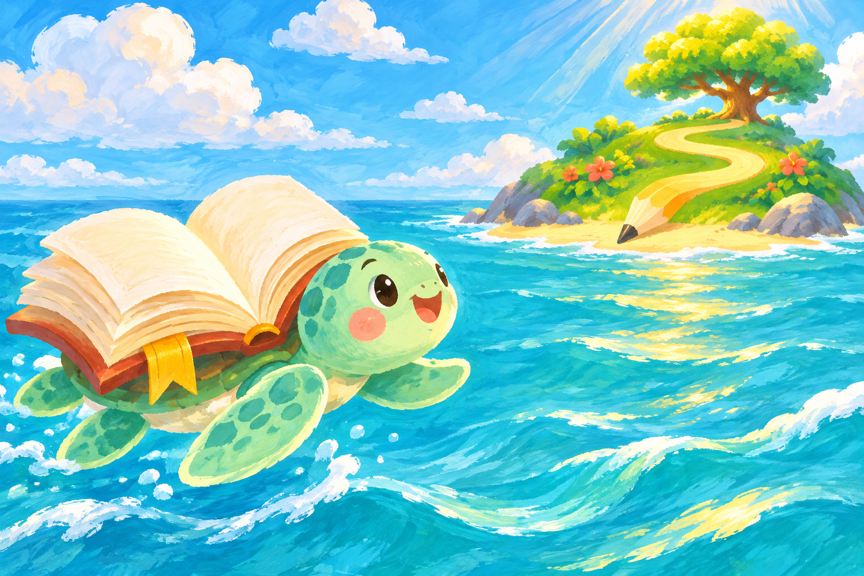

從生活裡找到故事
選一個主題，用 SPEAK 五關練習觀察、構思、寫作、接受教練追問，再修改與口說。
草稿和進度會留在這個瀏覽器，也可以匯出成長護照。

學生資料
依老師指示填寫，可留空。資料留在這個瀏覽器，匯出的學習護照會包含已填入的欄位。
選一個主題，用 SPEAK 五關練習觀察、構思、寫作、接受教練追問，再修改與口說。
草稿和進度會留在這個瀏覽器，也可以匯出成長護照。

依老師指示填寫，可留空。資料留在這個瀏覽器，匯出的學習護照會包含已填入的欄位。